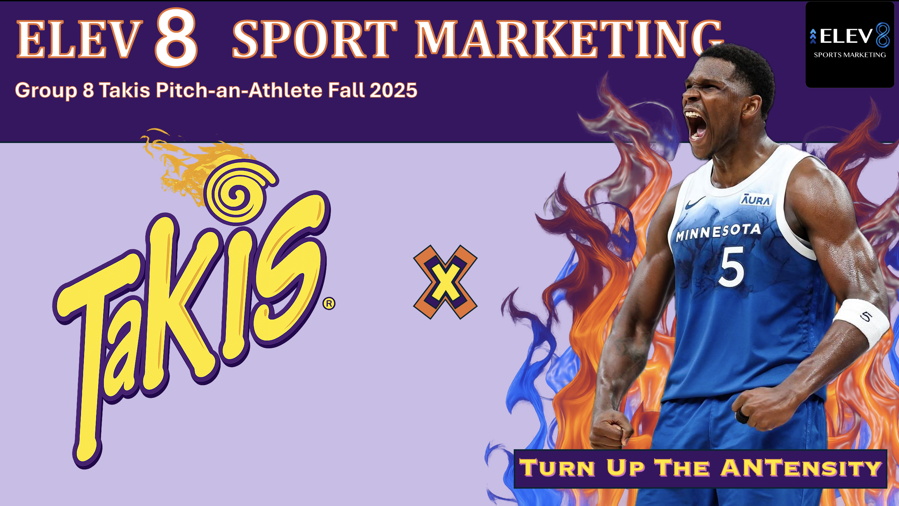

Overview
This project centered on creating and pitching an athlete brand modeled after the format of Shark Tank. In today's sports industry, athletes build their identities both on and off the field — this project challenged teams to research, develop, and present a comprehensive brand strategy for an assigned athlete to a mock panel of investors.
My role
I served as team leader, coordinating all aspects of our presentation and group collaboration. I organized team meetings, delegated responsibilities, and ensured all deliverables were completed on time and to a professional standard. I also reviewed and edited materials before submission and facilitated communication between team members.
Key achievements
- Led a team of peers through planning, research, and presentation development.
- Oversaw task delegation, scheduling, and submission logistics.
- Guided creative direction and narrative structure of our "athlete pitch."
- Recognized by our professor and a panel of guest "sharks" for the best overall presentation.
Skills demonstrated
Leadership Team Collaboration Branding Strategy Public Speaking